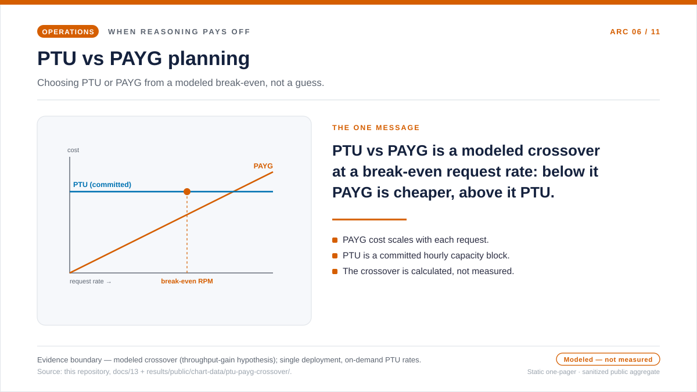
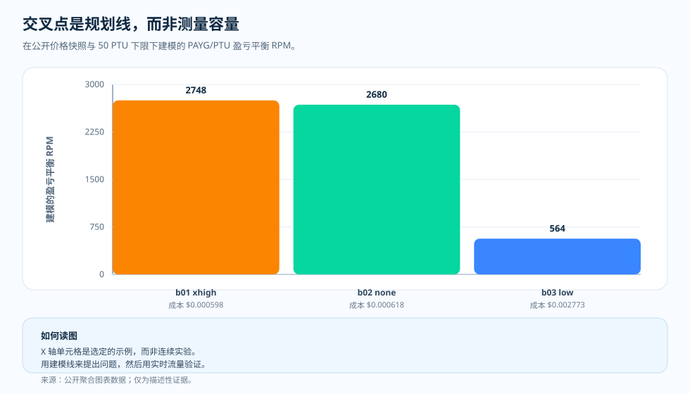

专题文章 · PTU/PAYG 规划模型
PTU/PAYG 交叉点：一条规划线，而不是容量结果
哪些模型和推理强度配置值得用，我们已经测完了。现在流量团队递来下个季度的预测，抛出一个左右账单的问题：在这个预计的请求速率下，是继续按量付费（PAYG），还是预留预置吞吐量（PTU）？人们很想画一条交叉线，然后把它当成答案。本文把这条线当成它真正的样子——一个建模出来的、只看价格的盈亏平衡点，而不是对一个在线 PTU 部署在负载下表现的测量；它告诉你的，是什么时候值得去跑一次容量实验。

我们为什么要建模这个
这条交叉线有两种解读，而且会把判断带向不同方向。第一种是把它当成判决：线指向 PTU，那就预留 PTU。第二种是把它当成规划触发：线在说，这个工作负载下 PTU 大概率更便宜，所以值得去跑一次容量实验。我们建模交叉点，就是为了第二种解读。
之所以这么做，是因为这条线只回答一个很窄的价格问题：在一份价格快照下，对一种测得的每请求 token 形态而言，固定的 PTU 下限在哪里开始比 PAYG 的账单更便宜。它对以下这些一概不说：部署能不能扛住那股流量、429 限流从哪里开始、负载下提示词缓存如何表现、p95 延迟会是什么样。把这个价格答案误当成容量答案，正是本文想要拦住的错误。
所以这次计算有意把两类输入组合在一起：一边是带日期的 PAYG 与 PTU 价格快照，另一边是从基准测试里测得的每请求成本与 token 形态。正是这种组合，让输出成了一个规划模型——扎根于真实测量，却只限于价格——而不是一个在线容量结果。
问题
建模出来的 PTU/PAYG 交叉点能说什么，又绝不该主张什么？
证据
一次盈亏平衡计算：把两份带日期的价格快照——pricing/azure-openai-payg-2026-05.yaml 与 pricing/azure-openai-ptu-2026-05.yaml——和 benchmark-01、-02、-03 测得的每请求成本与 token 形态吞吐量系数组合起来。输出是交叉点图表数据里的 modeled_break_even_rpm 系列，而不是测得的吞吐量。
发现
在这份价格快照下，建模出来的盈亏平衡点落在由每请求账单与 token 形态决定的位置：benchmark-01 extra-high 约 149 rpm，benchmark-02 none 约 2,680 rpm，benchmark-03 low 约 564 rpm——都按每 PTU 小时 $2.00 的 50 PTU 下限来缩放。这些是随价格快照和每请求 token 构成一起变动的计算值，而不是测得的饱和点。
结论
把交叉点当成一条规划线来读：它告诉你，在这种工作负载形态下，什么时候值得去跑一次容量实验，而不是判定某个具体部署一定需要 PTU。价格、token 构成、区域一变，就重新推导。

模型回答的是一个很窄的问题
交叉点计算把每请求平均成本、token 形态的吞吐量系数、公开价格快照，以及 50 PTU 下限组合起来，输出的是建模盈亏平衡 RPM。例如，benchmark-01 extra-high effort 落在约 149 rpm，benchmark-02 none 约 2,680 rpm，benchmark-03 low 约 564 rpm。
这些数字之所以有用，是因为它们揭示了工作负载形态如何改变规划层面的对话。它们不是在线负载的测量：429 从哪里开始、接近饱和时缓存如何表现、某个具体配置在 p95 延迟上会怎样——这些它都不说。
这张图该怎么读
X 轴是一组选定的基准行，Y 轴是建模盈亏平衡 RPM。柱子越高，意味着在建模 PTU 下限开始显得更便宜之前，PAYG 能伸展到越高的请求速率；柱子越低，那个工作负载就越早抵达模型上的交叉点。
这些柱子不是连续的容量曲线，而是从公开聚合数据和价格快照里推导出来的规划标记。
这个区分为什么重要
没有这个区分，交叉点图就可能被误读成承诺。人们会想说：交叉点在 149 rpm 的行"需要 PTU"，交叉点在 2,680 rpm 的行"不需要 PTU"。但证据要谨慎得多：图说的是，在建模前提下经济性看上去如何。一个在线系统，仍然需要延迟、缓存、重试、饱和方面的证据。
这份谨慎不是软弱。正是它让这张图变得可用：图告诉团队什么时候该去跑一次容量实验，而不告诉你那次实验会发现什么。
这意味着什么
PAYG 和 PTU 回答的是不同的问题。PAYG 问的是：每个完成的请求要花多少钱。PTU 问的是：在可接受的质量和延迟下，固定容量能扛住什么。交叉线把这两个世界连起来，却不会把它们折叠进同一次测量。
所以在这个项目里，我们把这条线明确标注为一个建模出来的假设：它属于测得的图表旁边，而不是图表之上。
证据表
| 证据行 | 指标 A | 指标 B | 它补充了什么 |
|---|---|---|---|
| benchmark-01 extra-high | 建模 149 rpm | 50 PTU 下限 | 每请求账单偏高，因此交叉点来得早。 |
| benchmark-02 none | 建模 2,680 rpm | 50 PTU 下限 | 测得的请求便宜，因此交叉点来得晚。 |
| benchmark-03 low | 建模 564 rpm | 50 PTU 下限 | 居中的情形：代理工作负载的 token 形态更大。 |
| 证据边界 | 建模出来的经济性 | 不是在线容量 | 用来决定下一步该试什么。 |
来源与证据边界
上面所有盈亏平衡数字都是计算，而不是测量。它们把测得的每请求成本与 token 形态，套在两份带日期的价格快照上算出。下面两个 Tier 标明了：有文档记载的输入 到哪里为止，建模出来的输出又从哪里开始。带 50 PTU 下限的 149 rpm 交叉点是一个 推导出来的计算，既不是测得的吞吐量，也不是 429 的发生，更不是饱和点。
- [1] Tier 1 — 方法论契约：本仓库，
docs/05-methodology.md（v1.0）。每个组合 N = 20 个人工编写样本、R = 3 次重复、仅取公开聚合结果。每请求成本输入沿用这组冻结前提；误差棒是标准差而非置信区间，在 N = 20 下不主张 p 值。 - [2] Tier 1 — PAYG 价格快照：本仓库，
pricing/azure-openai-payg-2026-05.yaml。来源：Azure OpenAI 定价页（2026-05-19 访问）· 存档。这里每 1M token 的单价（gpt-5.2 input $1.75/1M、cached input $0.175/1M、output 与 reasoning $14.00/1M；gpt-4o input $2.50/1M、cached $1.25/1M、output $10.00/1M）决定了进入公式的每请求账单。 - [3] Tier 1 — PTU 价格快照：本仓库，
pricing/azure-openai-ptu-2026-05.yaml。来源：Microsoft Learn 文档（2026-05-19 访问，区域 eastus2）· 存档。公式的 PTU 侧——每 PTU 小时 $2.00、50 PTU 的最小值（下限）、用于吞吐量系数的每 PTU Input TPM（gpt-4o 2,500、gpt-5.2 3,400）——都来自这份快照。PAYG 与 PTU 两侧的价格都进入盈亏平衡：一边是每请求的 PAYG 账单，另一边是固定的 $100/hour PTU 下限（50 × $2.00）。 - [4] Tier 2 — 测得的每请求输入：本仓库，
benchmarks/01-short-factual/analysis.json、benchmarks/02-multi-step-reasoning/analysis.json、benchmarks/03-tool-using-agent/analysis.json。它们提供每请求平均成本，以及成为相对 gpt-4o 基线吞吐量增益系数的逐配置 token 分布。 - [5] Tier 2 — 建模出来的交叉点输出（计算，而非测量）：本仓库，
docs/blog/data/chart-data/ptu-payg-crossover/benchmark-01/crossover.json、benchmark-02/crossover.json、benchmark-03/crossover.json。图所画的modeled_break_even_rpm系列由(min_ptu × ptu_hourly_rate ÷ (60 × mean_usd_per_request)) × throughput_gain_factor算出。benchmark-01 extra-high 的 149 rpm、50 PTU 下限、每 PTU 小时 $2.00，都明确标注为计算或引用的输入，是建模值，而不是测得的吞吐量。 - [6] 证据仪表盘：渲染后的 PTU/PAYG 交叉点图表组，是审计同一批 JSON 产物的可核查形态。
这组测量证明了什么、又没证明什么：它展示了在这份价格快照下，对持有 benchmark-01、 -02、-03 测得 token 分布的工作负载而言，这个建模盈亏平衡点落在哪里。它并不证明同样的 交叉点会在别的价格快照、别的工作负载形态、别的缓存命中率、别的推理构成或别的部署区域 下成立。这是一项规划辅助，既不是 SLA，也不是关于在线容量的论断。
这些证据允许我们说什么
交叉点之所以有价值，正是因为它保持谦逊：在这份价格快照下、对这套 token 分布，它把证据变成一个规划问题，而把在线容量交还给在线测量。
实用准则
- 把盈亏平衡 RPM 当成从带日期的 PAYG 与 PTU 快照推导出来的、只看价格的计算；任一快照一动，就重新推导。
- 对齐到你正在规划的那类任务的测得 token 形态，而不是通用工作负载。
- 把偏低的交叉点当成去跑容量实验的触发，而不是某个部署一定需要 PTU 的证明。
- 在敲定 PTU 之前，先考虑图上看不见的非价格因素——延迟目标、准入并发数、突发承受力。
实用准则：交叉点展示的只是这份快照和 token 形态下、只看价格的盈亏平衡点。选 PTU 还是 PAYG，要把它和它无法建模的非价格因素——延迟、准入、突发——配对着判断。
下一篇： 从测量到生产 — 证据层的习惯什么时候需要变成运维层的习惯？又有哪些东西会在两者之间延续下来？